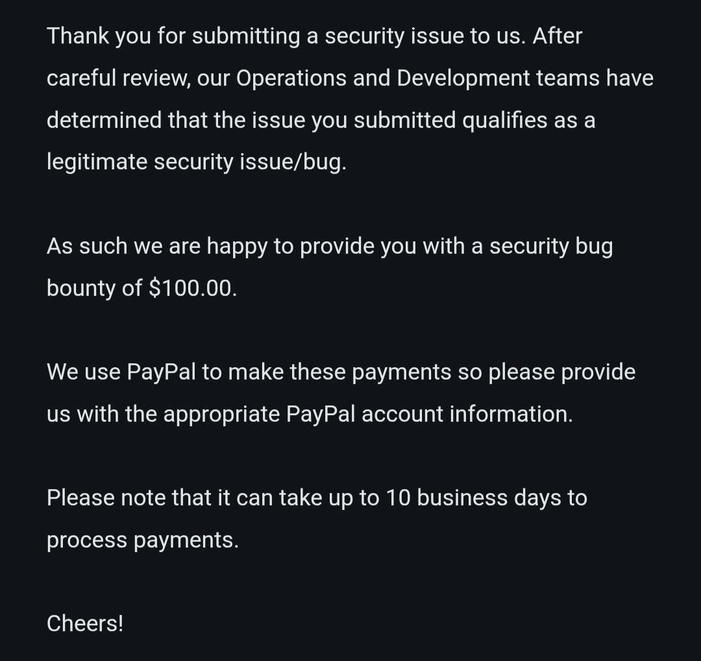

Hello Hackers! 👋🔥

I hope you are all doing well and continuing to make the digital world a safer place. 🌐🔐
Today, I am back with another interesting bug bounty story that taught me an important lesson about persistence, responsible disclosure, and the importance of retesting security fixes.
This time, the journey ended with a $100 bounty and a wonderful Diwali surprise at navratri 🪔💰 so thank you Maa for this 🔱🕉️
🎯 Discovering a High-Severity Vulnerability
During one of my security assessments, I discovered a high-severity vulnerability in a target application. After validating the issue and understanding its potential impact, I responsibly reported my findings to the company's security team.
The company acknowledged my report and implemented a fix to address the vulnerability. At that point, I thought the issue had been resolved and the story was over. ✅
However, I decided to revisit the affected functionality after the fix was deployed. I wanted to make sure that the security controls were working as expected and that the original issue had genuinely been resolved.
🔍 The Unexpected Bypass
While retesting the updated functionality, I noticed something interesting. 👀
The implemented fix did not completely eliminate the underlying vulnerability. I discovered a way to bypass the new security control, causing the original issue to reappear and exposing the same sensitive information.
This was an important discovery because it showed that, although a fix had been implemented, the vulnerability could still be exploited under certain conditions.
A vulnerability is not truly fixed until the underlying security issue has been properly addressed and the fix has been verified.
Rather than treating the bypass as a separate, unrelated observation, I focused on demonstrating how the previous remediation could still be circumvented and why additional changes were necessary.
📩 Reporting the Bypass
After validating the issue, I promptly contacted the security team and explained that the previously implemented fix could still be bypassed.
I described the behavior I observed, the remaining security impact, and why the original vulnerability should not yet be considered fully resolved.
The team reviewed my follow-up report, appreciated the additional testing, and acknowledged the issue.
The best part? They rewarded me with $100 for the finding! 💵🎉
Receiving this reward was a wonderful surprise, especially during the festive season. A big thank you to God for this amazing Diwali gift! 🪔❤️🙏
💡 Today's Bug-Hunting Lesson
One of the most important habits in bug bounty hunting is to always retest vulnerabilities after a fix has been deployed.
A security patch may address the visible symptom without completely fixing the underlying cause. In some cases, alternative application flows or incomplete security checks may allow the same vulnerability to persist.
Whenever a program fixes your reported vulnerability, take the time to verify the remediation within the authorized scope of the program.
- 🔍 Retest the original issue: Confirm that the vulnerable behavior is no longer reproducible.
- 🛡️ Verify the underlying fix: Check whether the root cause has been addressed rather than just the original symptom.
- 🔄 Consider alternative scenarios: Test relevant application flows and security controls within the authorized scope.
- 📩 Communicate clearly: Explain the bypass, its impact, and the reason the previous fix is insufficient.
- ⚖️ Follow responsible disclosure: Avoid accessing unnecessary sensitive information and follow the program's testing rules.
- 🚀 Never stop learning: Every retest is an opportunity to understand an application's security more deeply.
🏅 Final Thoughts
This experience reminded me that finding a vulnerability is only one part of security research. Verifying the fix is equally important.
Sometimes, a follow-up test can reveal what the initial assessment missed. Being patient, curious, and thorough can make a real difference in improving an application's security.
For me, this discovery was not just about earning a bounty. It was also about learning, improving my testing skills, and helping make the digital world safer.
Keep learning, keep hunting, and always verify the fix! 🎯🔐
If you have any questions or would like to connect, feel free to reach out through my Linktree or social media handles.
Thank You,
MR. X FACTOR
🔗 Handles
- Linktree: https://linktr.ee/mrxfact0r_99